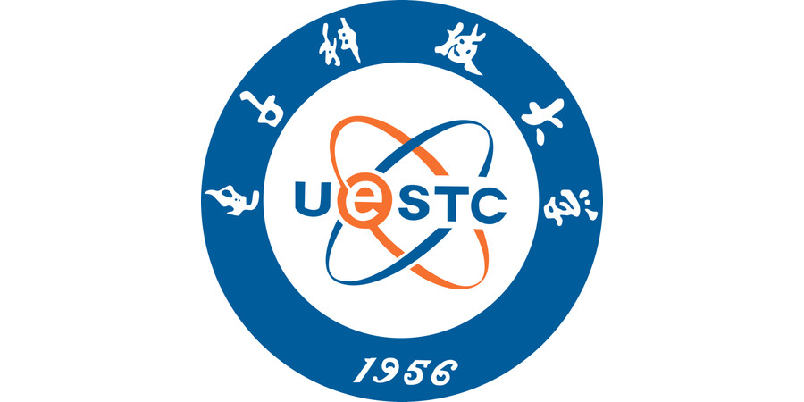
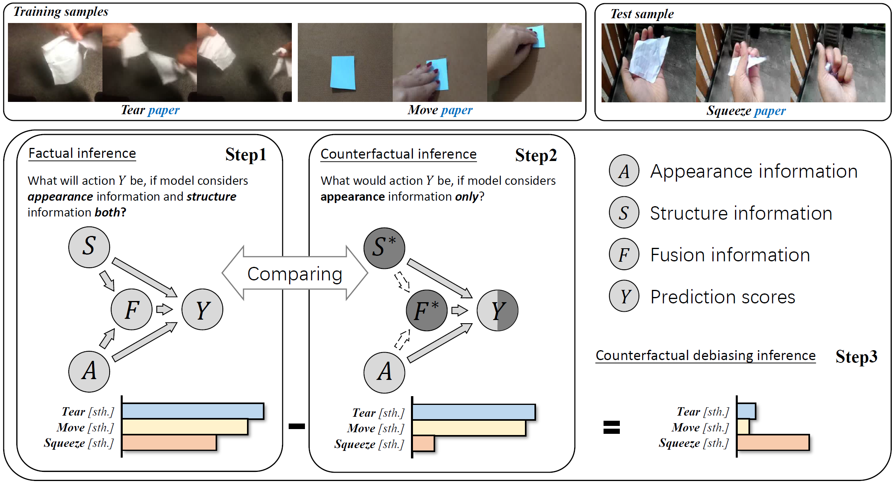

LIU, Yangcen 刘洋岑
|
LIU, Yangcen
|
About Me
I'm currently an undergraduate student at University of Electronic Science and Technology of China from 2020 Fall, a member of DIG@UESTC.
I received B.S. degree in Artificial Intelligence from School of Computer Science and Engineering (School of Cyber Security) at University of Electronic Science and Technology of China in 2022, supervised by Prof. Wen Li.
My current research interests include but are not limited to 1) video understanding, 2) action detection, and 3) robot learning.
Education
|  |
University of Electronic Science and Technology of China (UESTC), China Bachelor Degree in Artificial Intelligence. School of Computer Science and Technology. • Sep. 2020 - Jun. 2024Lab: Data Intelligence Group Supervisors: Prof. Wen Li and Prof. Lixin Duan |
|
University at Buffalo (SUNY), United States of America Visiting Student Research Program. Computer, Electrical and Mathematical Sciences and Engineering. • Mar. 2022 - Dec. 2022Lab: Visual Computing Lab Supervisor: Prof. Junsong Yuan Collaborated with Prof. Ziyi Liu, Yuanhao Zhai and Prof. David Doermann |
News
- [March 2024] One paper was submitted to ECCV 2024.
- [Feburary 2024] One paper was submitted to TMM 2024.
- [November 2023] One paper was submitted to CVPR 2023 and failed to be published.
- [April 2023] Became a summer intern of Visual Computing Group, supervised by Prof. Junsong Yuan.
- [April 2022] One paper was submitted to ACM Multimedia 2023 and failed to be published.
- [April 2021] Became a member of Data Intelligence Group, University of Electronic Science and Technology of China, supervised by Prof. Wen Li.
Preprints
 |
ImageCaptioner2: Image Captioner for Image Captioning Bias Amplification Assessment |
Publications
|  |
Counterfactual Debiasing Inference for Compositional Action Recognition. |
Services
Conference Reviewer:
- ACM-MM 2023
- ACM-MM 2024
Teaching
- None.
Awards
- Outstanding Student Scholarship for three consecutive years, UESTC
Others
- I'm trying hard to fill up my homepage.😂
- ENTP-a.